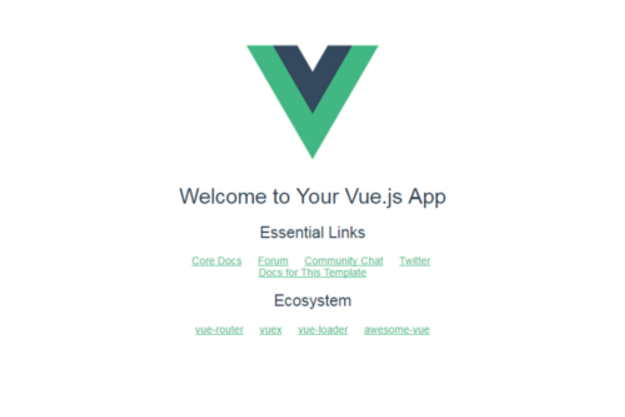

什么是跨域就不废话了，之前使用access-control-allow-origin方式解决跨域，这个方法很好用，只需要在后端添加一个filter即可。具体操作百度即可。
1 2 3 4 5 6 7 8 9 10 11 12 13 14 15 16 17 18 19 import javax.servlet.http.HttpServletResponse; import java.io.IOException; @Component @ServletComponentScan @WebFilter(urlPatterns = "/*",filterName = "corsFilter") public class CorsFilter implements Filter { public void doFilter(ServletRequest req, ServletResponse res, FilterChain chain) throws IOException, ServletException { HttpServletResponse response = (HttpServletResponse) res; response.setHeader("Access-Control-Allow-Origin", "*"); response.setHeader("Access-Control-Allow-Methods", "*"); response.setHeader("Access-Control-Max-Age", "3600"); response.setHeader("Access-Control-Allow-Headers", "*"); System.out.println("*********************************过滤器被使用**************************"); chain.doFilter(req, res); } public void init(FilterConfig filterConfig) {} public void destroy() {} }
#####
下面要讲的是在vue项目中使用本地的api代理来解决跨域问题。项目需要使用vue-cli脚手架搭建。
一、新建vue项目
1.安装vue-cli
cnpm intall vue-cli -g
vue -V 查看vue版本号
2.创建webpack项目
vue init webpack cdTest cdTest即为创建的项目名
3.给项目安装库
4.测试运行
npm run dev 一般默认端口为8080

二、安装需要的插件
1.发送xmlHTTPrequest请求需要用到的插件
1 2 npm install --save vue-resource npm install --save axios
2.使用webstorm或其他软件打开这个项目
（1）在main.js中引入插件，以及声明使用
注意：axios不是使用Vue.use()方式声明使用的，而是通过
1 Vue.prototype.$axios=axios;
在其他vue组件中就可以this.$axios调用使用，之前使用Vue.use(axios)，然后在组件中使用axios.get()函数的时候，会出现 get() undefined 的错误.
（2）要使用代理，必须到config目录下设置，在config目录下新建proxyConfig.js
1 2 3 4 5 6 7 8 9 10 11 12 module.exports = { proxy: { '/apis': { //将http://127.0.0.1:9090印射为/apis target: 'http://127.0.0.1:9090', // 接口域名 secure: false, // 如果是https接口，需要配置这个参数 changeOrigin: true, //是否跨域 pathRewrite: { '^/apis': '' //需要rewrite的, } } } }
（3）config/index.js中添加
1 var proxyConfig = require('./proxyConfig')
在dev中的ProxyTable：
1 proxyTable: proxyConfig.proxy,
（4）本地配置http://127.0.0.1:9090/Test/loadById/11
（5）界面调用函数：前端运行的8080端口调用后端的9090端口的数据
（6）结果
（7）经测试，带IE内核的浏览器均可以获得数据。https://www.jb51.net/article/130509.htm